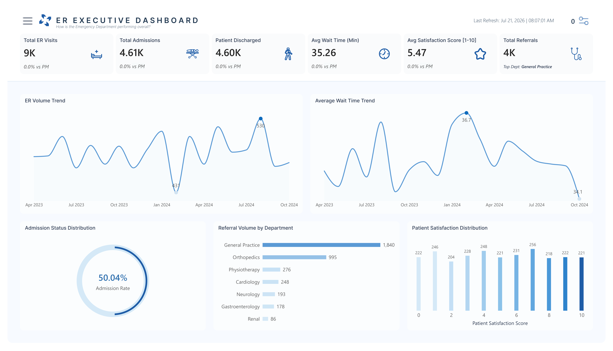

1.
Overview
The business context and analytical objective behind the Hospital ER Analysis project.
Emergency departments must balance patient demand, service capacity, waiting time, admissions, referrals, and patient experience. Without a consolidated view of these operational signals, it becomes difficult to identify pressure points and prioritize improvement.
Use ER visit, arrival, shift, admission, referral, wait-time, and satisfaction data to identify where operational efficiency and patient experience can be improved.
2.
Business Questions
The operational challenges and key questions guiding the analysis.
Business Problem
Emergency department stakeholders need a clearer understanding of patient demand, operational performance, patient flow, referral activity, and patient experience in order to identify pressure points and improvement priorities.
Key Questions
- When and where is emergency department demand most concentrated?
- Which operational windows create the greatest pressure on patient flow?
- How do admissions and referrals vary across shifts and departments?
- Where are the main opportunities to improve patient experience and service performance?
3.
Key Insights
The most important findings identified from emergency department performance data.
Peak arrivals create concentrated demand pressure
Observation
Patient arrivals are concentrated within specific operating windows rather than being evenly distributed throughout the day.
Analysis
Concentrated demand increases the risk of service pressure when staffing and support capacity are not aligned with arrival peaks.
Impact
Peak periods can contribute to congestion, slower patient flow, and inconsistent service performance.
Recommendation
Align staffing and support coverage with observed peak arrival windows.

Afternoon shift demonstrates stronger operating performance
Observation
The Afternoon shift records the highest admission rate while also maintaining the lowest average wait time.
Analysis
This suggests that effective staffing, workflow, and workload practices may be contributing to stronger shift performance.
Impact
The Afternoon shift provides an internal benchmark for improving performance across other operating periods.
Recommendation
Review and replicate effective practices from the Afternoon shift where appropriate.
Referral activity is concentrated in key departments
Observation
Referral activity is concentrated within a limited number of departments, with General Practice generating the highest volume.
Analysis
High-volume referral pathways create opportunities for targeted process improvement and coordination review.
Impact
Improvements within major referral pathways can potentially affect a large number of patient journeys.
Recommendation
Prioritize pathway review for high-volume departments, beginning with General Practice.
Patient experience remains an active improvement area
Observation
Low patient ratings exceed high ratings, indicating an opportunity to improve the overall patient experience.
Analysis
Wait time and service experience should be monitored together to better understand where dissatisfaction emerges.
Impact
Without structured monitoring and follow-up, recurring experience issues may remain difficult to identify and address.
Recommendation
Monitor wait time and satisfaction together and track targeted service-recovery actions.
4.
Recommendations
Translating key insights into focused operational improvement priorities.
Insight
Recommendation
Why It Matters
Expected Impact
Peak arrivals require capacity alignment.
Align staffing and support coverage with observed peak arrival windows.
Capacity is better matched to actual demand, reducing reliance on static staffing assumptions.
Lower congestion risk and more responsive ER operations.
Afternoon provides an internal benchmark.
Review and replicate effective staffing, workflow, and workload practices from the Afternoon shift.
The shift combines the highest admission rate with the lowest average wait time.
More consistent operating performance across shifts.
Referral activity is concentrated.
Prioritize pathway review for high-volume departments, starting with General Practice.
Improvements in high-volume pathways can create a broad operational effect.
Better coordination and less process friction.
Patient experience needs a closed-loop response.
Monitor wait time and satisfaction together, then track targeted service-recovery actions.
Low patient ratings exceed high ratings, making experience an active improvement area.
Earlier issue detection and stronger service-quality management.
5.
Business Impact
The expected operational and business value created through the recommended actions.
6.
Technical Tools
The tools and technologies used to transform raw data into decision-ready insights.